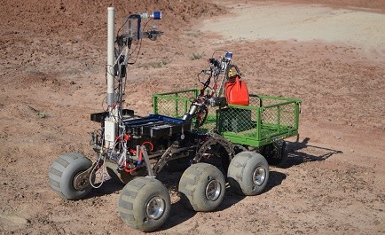

Experience
-
Mars Rover Manipal, MAHE, Udupi, Karantaka
-
Artificial Intelligence Member, May 2020- Present
-
Working with a team of 4 people in AI division of Mars Rover
Manipal, preparing the podium finish autonomous stack for the rover
in University Rover Challenge 2021, Utah, USA.*Github*
-
Specifically focusing on rover's search and detection capabilities
in an unknown environment using various computer vision and custom
search techniques *Github*
-
Eletronics and AI Taskphase, September
2019- May 2020
-
Worked on various mini projects on Arduino UNO, RPI-3, STM,
communication protocols like UART, SPI, I2C and computer vision.
-
Implemented various automation techniques for traversal and
localisation of a mobile robot